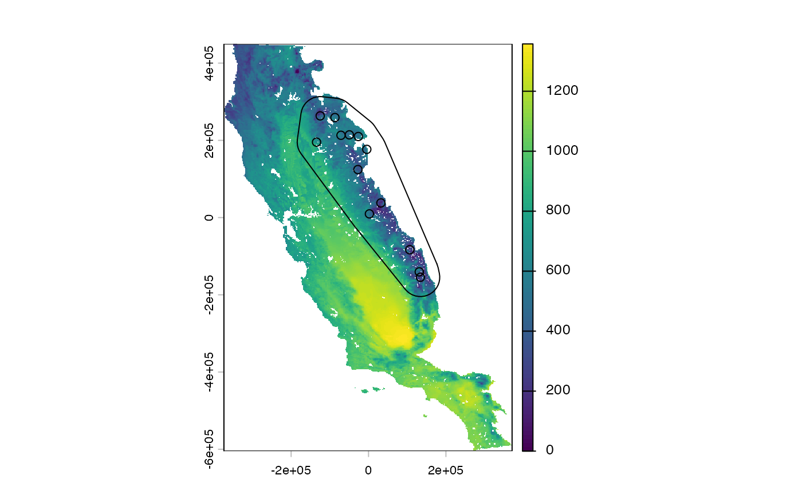
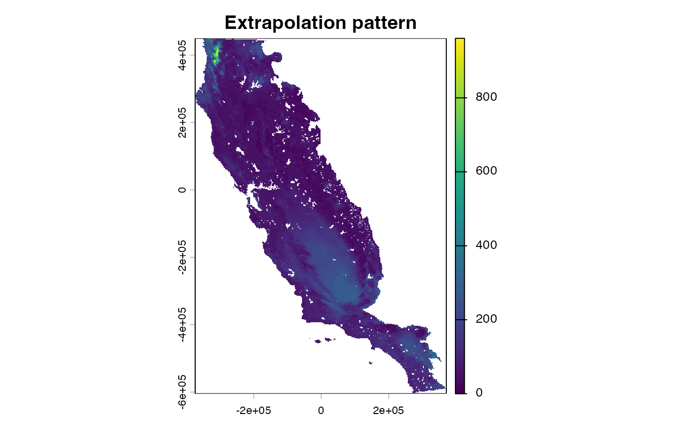
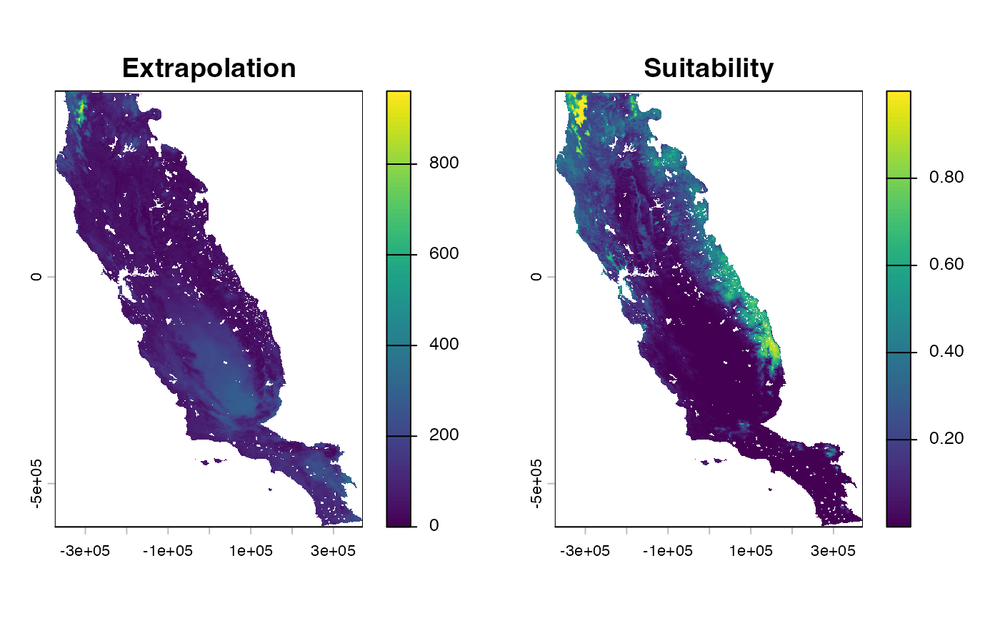
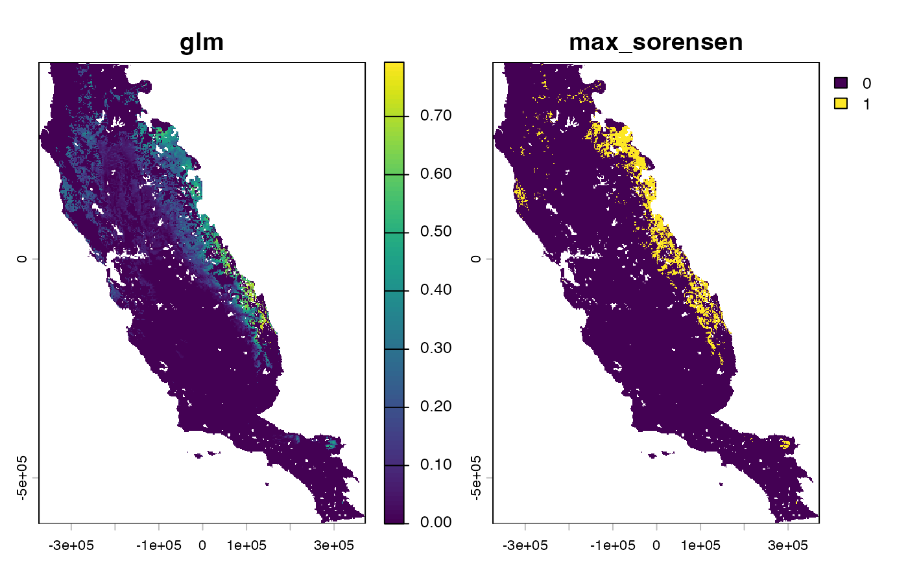
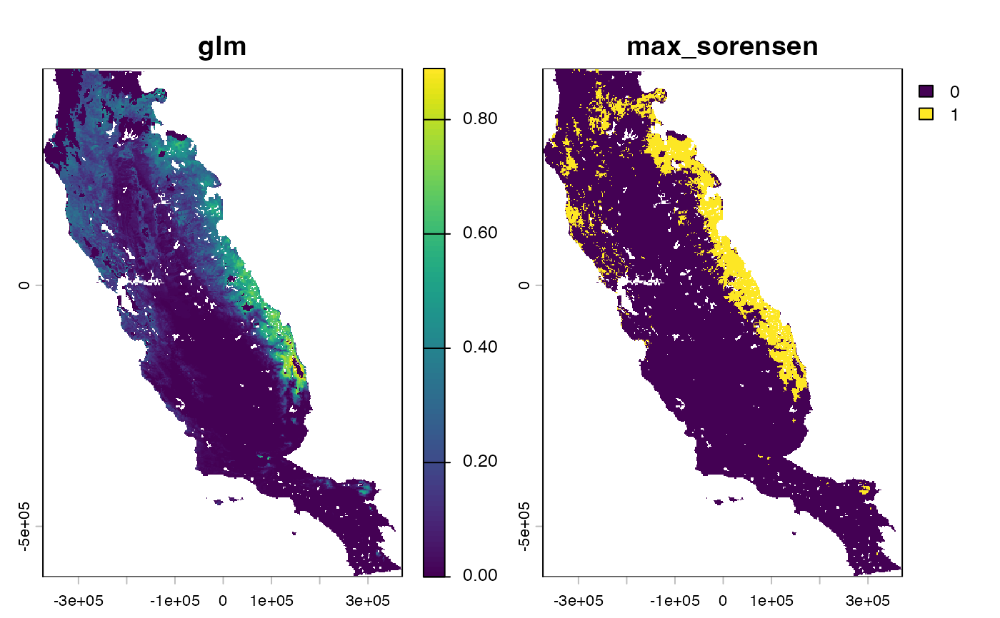
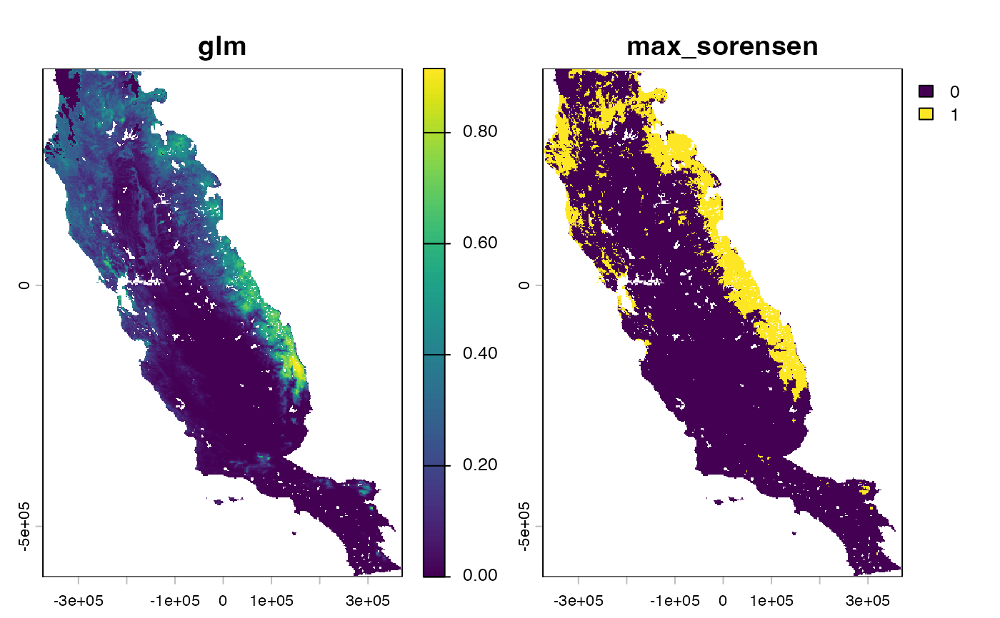
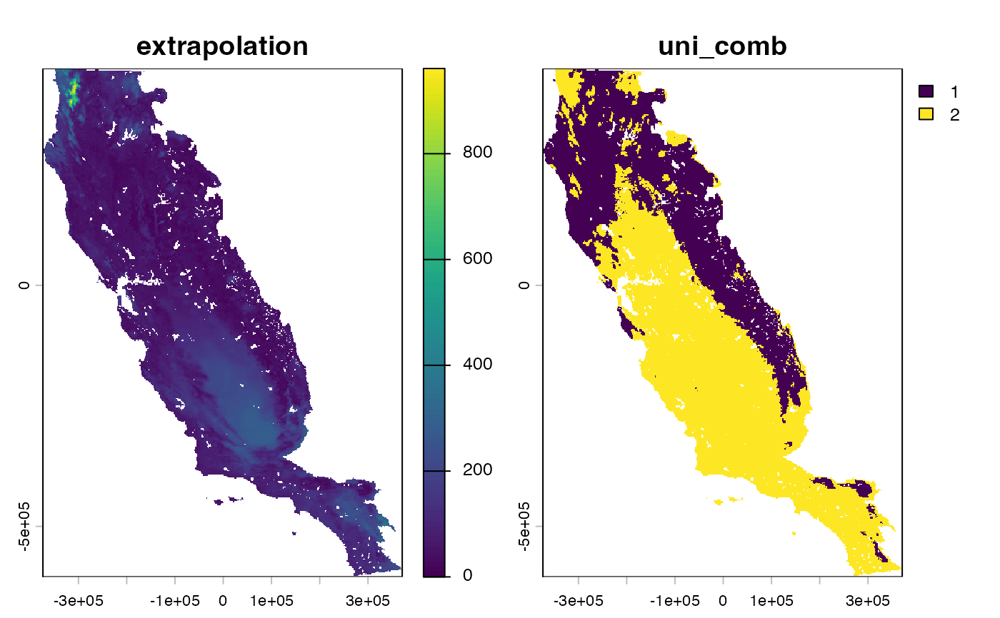

Measure model extrapolation based on Shape extrapolation metric
Source:R/extra_eval.R
extra_eval.RdMeasure extrapolation comparing environmental data used for modeling calibration and area for model projection. This function use the Shape metric proposed by Velazco et al., 2023 (doi:10.1111/ecog.06992 )
Usage
extra_eval(
training_data,
pr_ab,
projection_data,
metric = "mahalanobis",
univar_comb = FALSE,
aggreg_factor = 1
)Arguments
- training_data
data.frame or tibble with environmental conditions of presence and absence (or background points or pseudo-absences) used for constructing models
- pr_ab
character. Column name with presence and absence (or background points or pseudo-absences) data (i.e., 1 and 0)
- projection_data
SpatRaster, data.frame or tibble with environmental condition used for projecting a model (e.g., a larger, encompassing region, a spatially separate region, or a different time period). If data.frame or tibble is used function will return a tibble object. Otherwise, as SpatRaster object.
- metric
character. Metric used to measure degree of extrapolation. Default = mahalanobis.
mahalanobis: Degree of extrapolation is calculated based on Mahalanobis distance.
euclidean: Degree of extrapolation is calculated based on Euclidean distance.
- univar_comb
logical. If true, the function will add a layer or column to distinguish between univariate (i.e., projection data outside the range of training conditions) and combinatorial extrapolation (i.e., projection data within the range of training conditions) using values 1 and 2, respectively. Default FALSE
- aggreg_factor
positive integer. Aggregation factor expressed as number of cells in each direction to reduce raster resolution. Use value higher than 1 would be useful when measuring extrapolation using a raster with a high number of cells. The resolution of output will be the same as raster object used in 'projection_data' argument. Default 1, i.e., by default, no changes will be made to the resolution of the environmental variables.
Value
A SpatRaster or tibble object with extrapolation values measured by Shape metric. Also it is possible estimate univariate and combinatorial extrapolation metric (see `univar_comb` argument).
Details
This function measure model extrapolation base on the Shape metric
(Velazco et al., 2023; doi:10.1111/ecog.06992
).
Shape is a model-agnostic approach that calculates the extrapolation
degree for a given projection data point by its multivariate distance to the nearest training
data point. Such distances are relativized by a factor that reflects the dispersion of the
training data in environmental space. Distinct from other approaches (e.g.,
MESS-Multivariate Environmental Similarity Surfaces, EO-Environmental Overlap,
MOP-Mobility-Oriented Parity, EXDET-Extrapolation Detection, or AOA-Area of Applicability),
Shape incorporates an adjustable threshold to control the binary discrimination between
acceptable and unacceptable extrapolation degrees (see extra_truncate).
See this vignette at flexsdm website for further details about Shape metric, model truncation, and tools to explore model extrapolation.
References
Velazco, S.J.E., Brooke, M.R., De Marco Jr., P., Regan, H.M. and Franklin, J. 2023. How far can I extrapolate my species distribution model? Exploring Shape, a novel method. Ecography: e06992. doi:10.1111/ecog.06992
Examples
# \donttest{
require(dplyr)
require(terra)
data(spp)
f <- system.file("external/somevar.tif", package = "flexsdm")
somevar <- terra::rast(f)
names(somevar) <- c("aet", "cwd", "tmx", "tmn")
spp$species %>% unique()
#> [1] "sp1" "sp2" "sp3"
sp <- spp %>%
dplyr::filter(species == "sp3", pr_ab == 1) %>%
dplyr::select(x, y, pr_ab)
# Calibration area based on some criterion such as dispersal ability
ca <- calib_area(sp,
x = "x", y = "y",
method = c("bmcp", width = 50000),
crs = crs(somevar)
)
plot(somevar[[1]])
points(sp)
plot(ca, add = TRUE)

# Sampling pseudo-absences
set.seed(10)
psa <- sample_pseudoabs(
data = sp,
x = "x",
y = "y",
n = nrow(sp) * 2,
method = "random",
rlayer = somevar,
calibarea = ca
)
# Merge presences and absences databases to get a complete calibration data
sp_pa <- dplyr::bind_rows(sp, psa)
sp_pa
#> # A tibble: 39 × 3
#> x y pr_ab
#> <dbl> <dbl> <dbl>
#> 1 -26331. 209912. 1
#> 2 -134331. 195332. 1
#> 3 131079. -140548. 1
#> 4 -27411. 124322. 1
#> 5 106509. -83308. 1
#> 6 -86811. 259052. 1
#> 7 134049. -154588. 1
#> 8 -124881. 263372. 1
#> 9 -71151. 213152. 1
#> 10 2289. 9572. 1
#> # ℹ 29 more rows
# Get environmental condition of calibration area
sp_pa_2 <- sdm_extract(
data = sp_pa,
x = "x",
y = "y",
env_layer = somevar
)
#> 1 rows were excluded from database because NAs were found
sp_pa_2
#> # A tibble: 38 × 7
#> x y pr_ab aet cwd tmx tmn
#> <dbl> <dbl> <dbl> <dbl> <dbl> <dbl> <dbl>
#> 1 -26331. 209912. 1 440. -0.958 124. 11.4
#> 2 -134331. 195332. 1 648. 9.70 270. 8.45
#> 3 131079. -140548. 1 365. -3.62 132. 13.1
#> 4 -27411. 124322. 1 307. 1.13 283. 15.7
#> 5 -86811. 259052. 1 582. -0.314 139. 12.6
#> 6 134049. -154588. 1 242. -5.88 171. 11.4
#> 7 -124881. 263372. 1 410. -0.699 267. 18.1
#> 8 -71151. 213152. 1 580. 1.45 183. 9.49
#> 9 2289. 9572. 1 505. 1.82 199. 8.51
#> 10 31989. 37922. 1 157. -5.04 261. 23.1
#> # ℹ 28 more rows
# Measure degree of extrapolation based on Mahalanobis and
# for a projection area based on a SpatRaster object
extr <-
extra_eval(
training_data = sp_pa_2,
projection_data = somevar,
pr_ab = "pr_ab",
aggreg_factor = 1,
metric = "mahalanobis"
)
plot(extr, main = "Extrapolation pattern")

# Let's fit, predict and truncate a model with extra_truncate
sp_pa_2 <- part_random(
data = sp_pa_2,
pr_ab = "pr_ab",
method = c(method = "kfold", folds = 5)
)
a_model <- fit_glm(
data = sp_pa_2,
response = "pr_ab",
predictors = c("aet", "cwd", "tmx", "tmn"),
partition = ".part",
thr = c("max_sorensen")
)
#> Formula used for model fitting:
#> pr_ab ~ aet + cwd + tmx + tmn + I(aet^2) + I(cwd^2) + I(tmx^2) + I(tmn^2)
#> Replica number: 1/1
#> Partition number: 1/5
#> Partition number: 2/5
#> Partition number: 3/5
#> Partition number: 4/5
#> Partition number: 5/5
predsuit <- sdm_predict(
models = a_model,
pred = somevar,
thr = "max_sorensen"
)
#> Predicting individual models
predsuit # list with a raster with two layer
#> $glm
#> class : SpatRaster
#> size : 558, 394, 2 (nrow, ncol, nlyr)
#> resolution : 1890, 1890 (x, y)
#> extent : -373685.8, 370974.2, -604813.3, 449806.7 (xmin, xmax, ymin, ymax)
#> coord. ref. : +proj=aea +lat_0=0 +lon_0=-120 +lat_1=34 +lat_2=40.5 +x_0=0 +y_0=-4000000 +datum=NAD83 +units=m +no_defs
#> source(s) : memory
#> varnames : somevar
#> somevar
#> names : glm, max_sorensen
#> min values : 0.000002, 0
#> max values : 1, 1
#>
plot(predsuit[[1]])
# Truncate a model based on a given value of extrapolation
# using 'extra_truncate' function
par(mfrow = c(1, 2))
plot(extr, main = "Extrapolation")
plot(predsuit[[1]][[1]], main = "Suitability")

par(mfrow = c(1, 1))
predsuit_2 <- extra_truncate(
suit = predsuit[[1]],
extra = extr,
threshold = c(50, 100, 200)
)
predsuit_2 # a list of continuous and binary models with
#> $`50`
#> class : SpatRaster
#> size : 558, 394, 2 (nrow, ncol, nlyr)
#> resolution : 1890, 1890 (x, y)
#> extent : -373685.8, 370974.2, -604813.3, 449806.7 (xmin, xmax, ymin, ymax)
#> coord. ref. : +proj=aea +lat_0=0 +lon_0=-120 +lat_1=34 +lat_2=40.5 +x_0=0 +y_0=-4000000 +datum=NAD83 +units=m +no_defs
#> source(s) : memory
#> varnames : somevar
#> somevar
#> names : glm, max_sorensen
#> min values : 0, 0
#> max values : 0.793358, 1
#>
#> $`100`
#> class : SpatRaster
#> size : 558, 394, 2 (nrow, ncol, nlyr)
#> resolution : 1890, 1890 (x, y)
#> extent : -373685.8, 370974.2, -604813.3, 449806.7 (xmin, xmax, ymin, ymax)
#> coord. ref. : +proj=aea +lat_0=0 +lon_0=-120 +lat_1=34 +lat_2=40.5 +x_0=0 +y_0=-4000000 +datum=NAD83 +units=m +no_defs
#> source(s) : memory
#> varnames : somevar
#> somevar
#> names : glm, max_sorensen
#> min values : 0, 0
#> max values : 0.889424, 1
#>
#> $`200`
#> class : SpatRaster
#> size : 558, 394, 2 (nrow, ncol, nlyr)
#> resolution : 1890, 1890 (x, y)
#> extent : -373685.8, 370974.2, -604813.3, 449806.7 (xmin, xmax, ymin, ymax)
#> coord. ref. : +proj=aea +lat_0=0 +lon_0=-120 +lat_1=34 +lat_2=40.5 +x_0=0 +y_0=-4000000 +datum=NAD83 +units=m +no_defs
#> source(s) : memory
#> varnames : somevar
#> somevar
#> names : glm, max_sorensen
#> min values : 0, 0
#> max values : 0.915521, 1
#>
# different truncated at different extrapolation thresholds
plot(predsuit_2$`50`)

plot(predsuit_2$`100`)

plot(predsuit_2$`200`)

## %######################################################%##
#### Measure degree of extrapolation for ####
#### projection area based on data.frame ####
## %######################################################%##
extr_df <-
extra_eval(
training_data = sp_pa_2,
projection_data = as.data.frame(somevar, xy = TRUE),
pr_ab = "pr_ab",
aggreg_factor = 1,
metric = "mahalanobis"
)
extr_df
#> # A tibble: 72,801 × 7
#> extrapolation aet cwd tmn tmx x y
#> <dbl> <dbl> <dbl> <dbl> <dbl> <dbl> <dbl>
#> 1 315. -6.56 16.6 469. 144993. -468268. 2.39
#> 2 318. -4.59 16.1 499. 182716. -465120. 2.39
#> 3 318. -4.18 15.7 514. 212234. -461972. 2.39
#> 4 314. -4.52 15.4 517. 238679. -458825. 2.39
#> 5 312. -4.93 15.6 517. 260874. -455677. 2.39
#> 6 306. -6.25 16.4 461. 150916. -468268. 2.38
#> 7 313. -4.49 15.7 505. 211843. -465120. 2.38
#> 8 314. -4.56 15.7 511. 230384. -461972. 2.38
#> 9 312. -4.70 15.6 512. 244761. -458825. 2.38
#> 10 311. -5.04 15.8 516. 274699. -455677. 2.38
#> # ℹ 72,791 more rows
# see 'p_extra()' to explore extrapolation or suitability pattern in the
# environmental and/or geographical space
## %######################################################%##
#### Explore Shape metric with ####
#### univariate and combinatorial extrapolation ####
## %######################################################%##
extr <-
extra_eval(
training_data = sp_pa_2,
projection_data = somevar,
pr_ab = "pr_ab",
aggreg_factor = 1,
metric = "mahalanobis",
univar_comb = TRUE
)
extr
#> class : SpatRaster
#> size : 558, 394, 2 (nrow, ncol, nlyr)
#> resolution : 1890, 1890 (x, y)
#> extent : -373685.8, 370974.2, -604813.3, 449806.7 (xmin, xmax, ymin, ymax)
#> coord. ref. : +proj=aea +lat_0=0 +lon_0=-120 +lat_1=34 +lat_2=40.5 +x_0=0 +y_0=-4000000 +datum=NAD83 +units=m +no_defs
#> source(s) : memory
#> varnames : somevar
#>
#> names : extrapolation, uni_comb
#> min values : 0, 1
#> max values : 961.063937, 2
plot(extr) # In the second layer, values equal to 1 and 2

# depict univariate and combinatorial extrapolation, respectively
# }